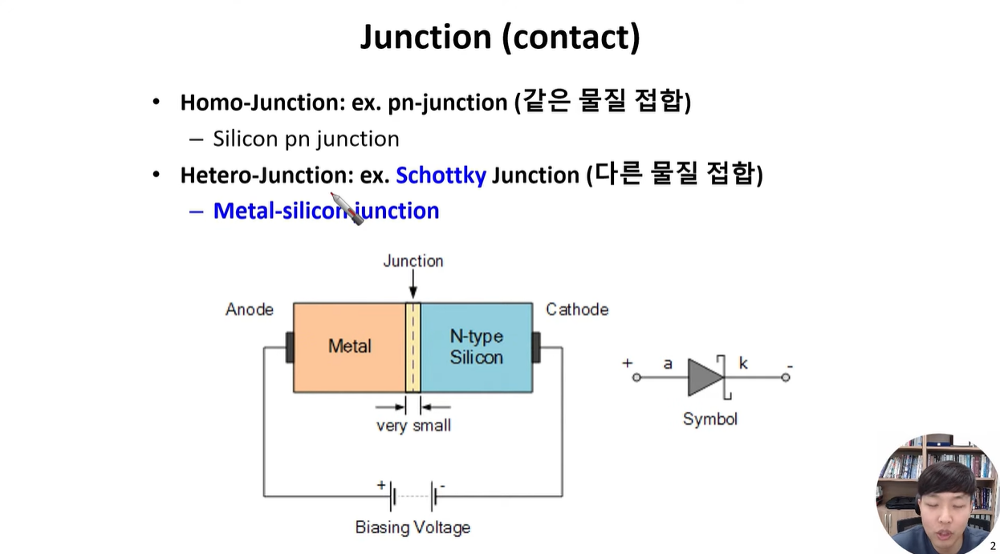
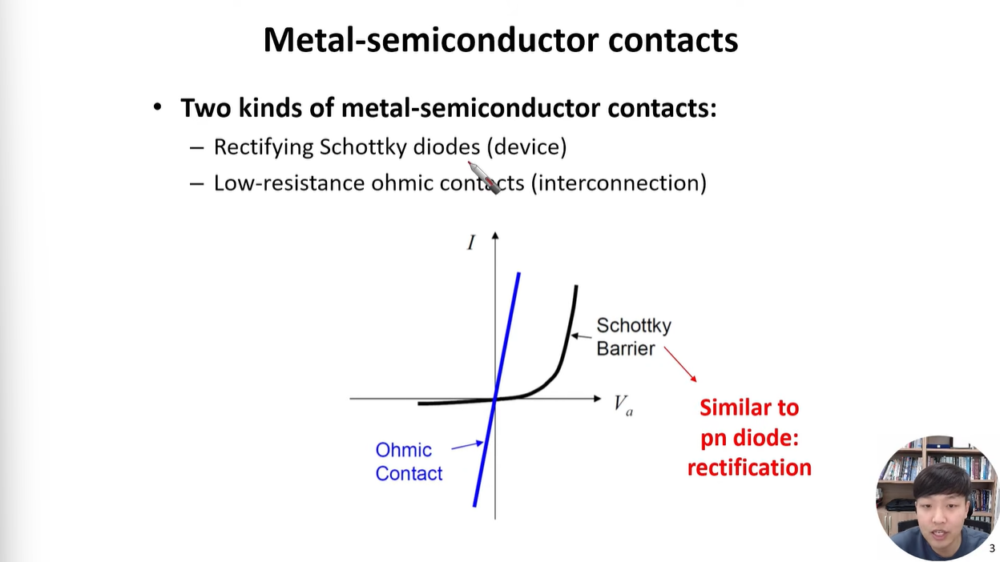
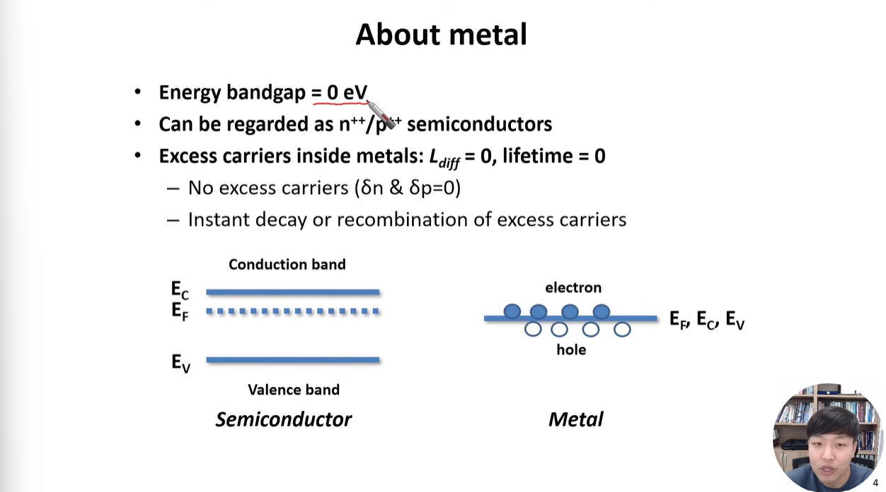
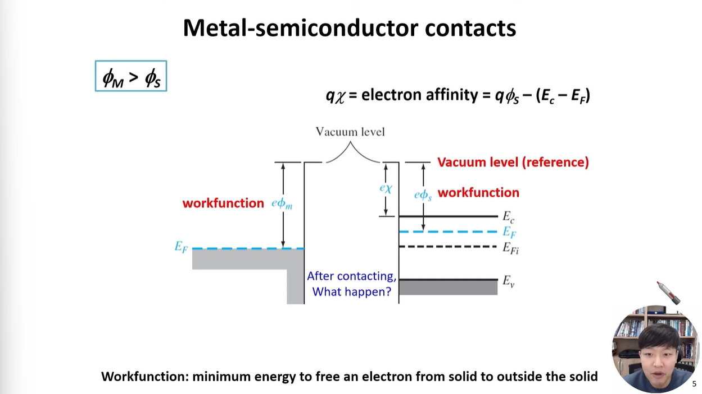

기초반도체공학 김성호 교수님 MS 접합
1. MS 접합 (유튜브 강의)
[사용자 노트 필기]
[[기초반도체공학|3.1] MS접합 : #정성적해석 #정류작용 #Schottky contact #Ohmic contact](https://www.youtube.com/watch?v=qVsmpjGjhpg&t=920s)

[사용자 노트 필기]
- 이전에는 PN 접합이 같은 반도체 물질에 대한 얘기였고, 지금 Hetero junction 에서는 Metal과 반도체를 접합시킨 것임

[사용자 노트 필기]
- 검은색 선 그래프를 보면 정류작용을 하는 것을 알 수 있다. Reverse bias에서는 전류가 흐르지 않다가 Forward bias에서는 전류가 흐른다. → Scottky diode
- 여기에서 파란 색 선 그래프를 보면 금속처럼 거동한다.

[사용자 노트 필기]
- 금속에 대한 얘기이다
- 보면 Ev에 Ef, Ec들이 다 하나의 값을 갖는다고 적혀있네
- Excess carrier가 존재할 수 없다. 재결합되어 바로 사라지기 때문이다.
- Eg = 0 eV
- Ldiff = 0, lifetime = 0
- δ n = δ p = 0

2. (1) Workfunction (eφm, eφs)
[사용자 노트 필기]
- 전자 1개를 고체 내에서 Vacuum level까지 끄집어 낼 때 필요한 값이다.
- Vacuum level 자체는 가상의 Level으로 어디에 고정되어 있는 값은 아니라고 한다.
- 일함수 값은 물질마다 정해지는 고유의 값이다.
- φM > φS
3. (2) Electron Affinity
[사용자 노트 필기]
- 고정된 값이다.
- qχ = electron affinity = qφS − (Ec − EF)